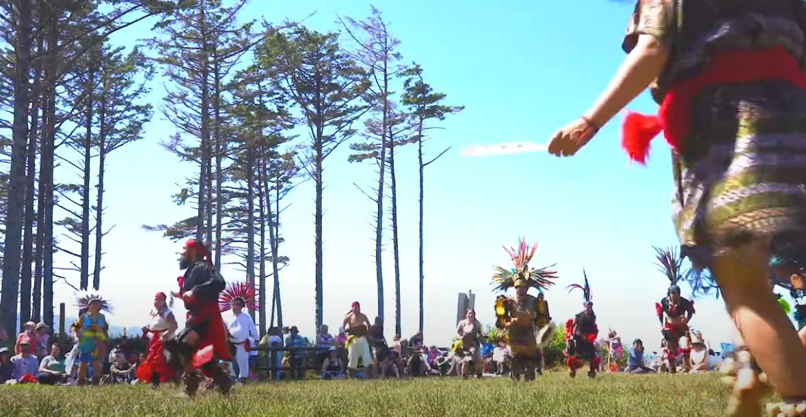
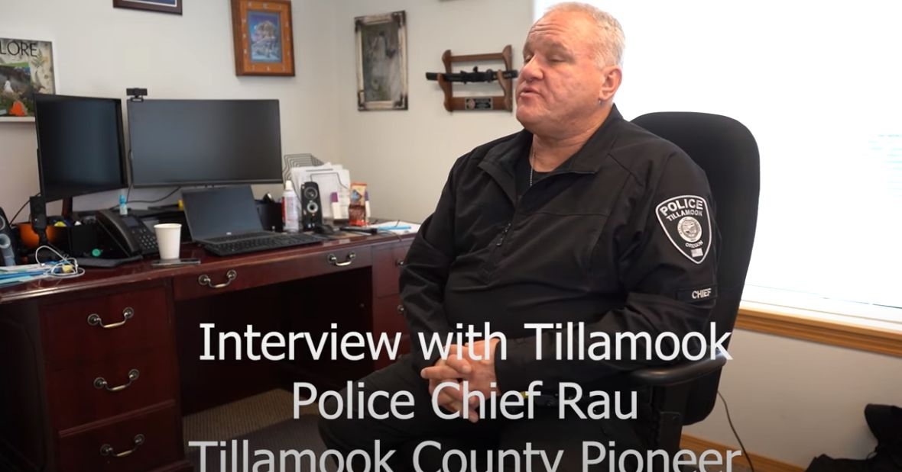
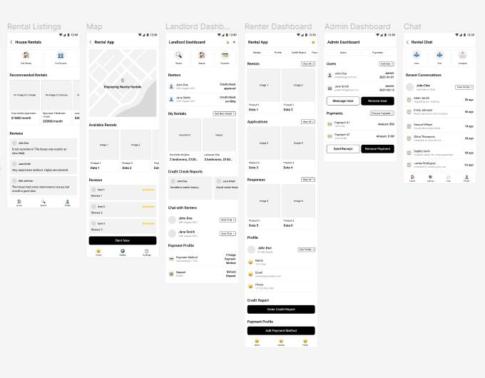
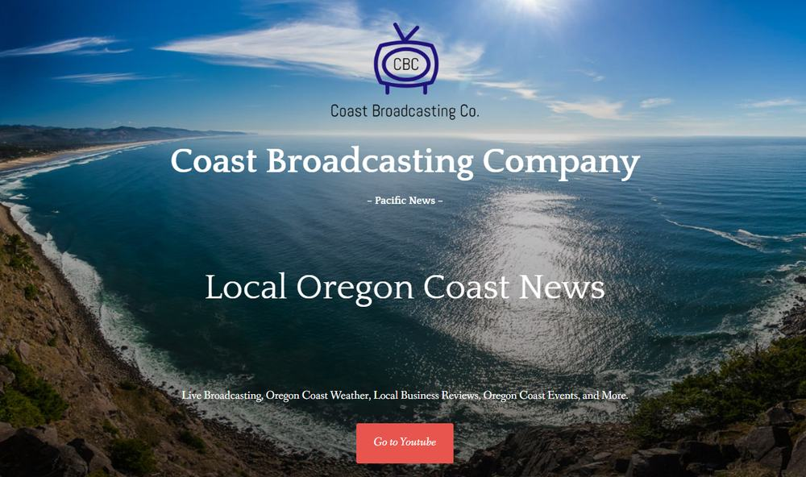
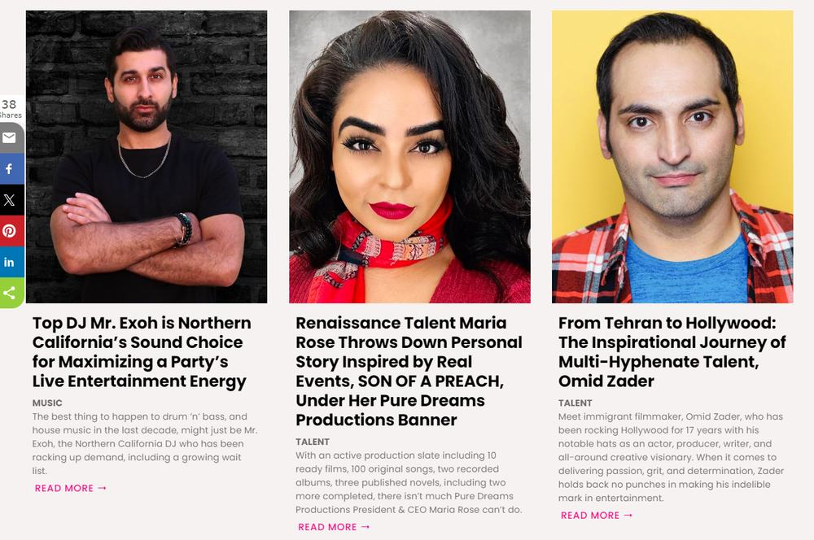
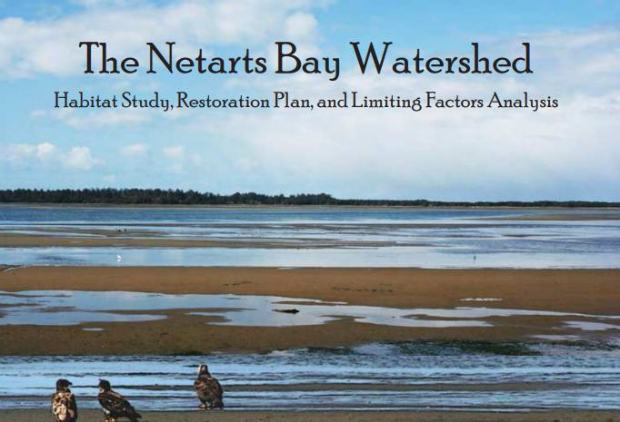
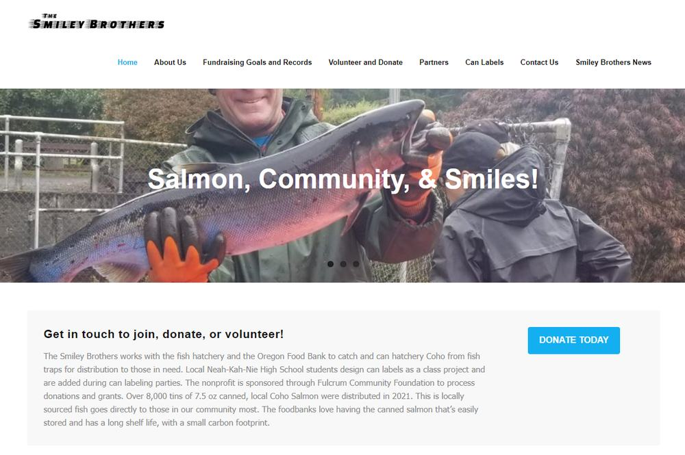

Offshore GrillRestaurant site
Graphic Oregon · website design
User-first, security-first web builds with a graphic-design spine. The sell is maintainable handoff and teach — live sites that keep evolving under new managers.
Sites she built — screenshots from the live Graphic Oregon home.




Same home gallery. Captions only when the site name is known.





Living handoff examples — sites that keep changing under new managers.
Field firm
Demeter Design capability plates — result graphics, quote-only.
Open watershedShe builds, hands off, and teaches — so the next manager can keep shipping.